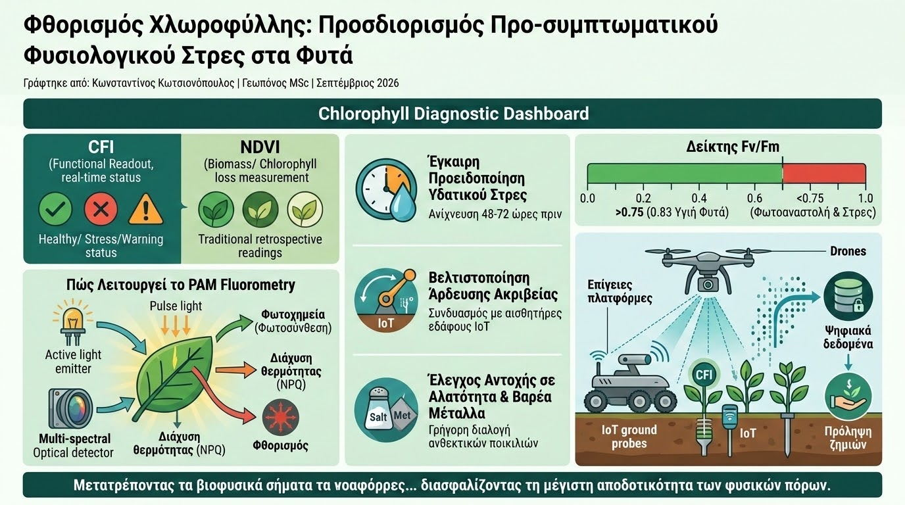

Στη διαχείριση των καλλιεργειών, οι παραδοσιακοί δείκτες ανακλαστικότητας (όπως το κλασικό NDVI) καταγράφουν κυρίως δομικές μεταβολές στη βιομάζα και απώλεια χλωροφύλλης. Αυτό σημαίνει ότι όταν ο δείκτης καταγράψει πτώση, το φυτό έχει ήδη υποστεί μη αναστρέψιμη βλάβη στους ιστούς του. Η σύγχρονη φυσιολογία φυτών και η γεωργία ακριβείας στρέφονται πλέον στην Απεικόνιση Φθορισμού της Χλωροφύλλης (Chlorophyll Fluorescence Imaging - CFI), μια μη επεμβατική οπτική μέθοδο που «διαβάζει» τη λειτουργική κατάσταση της φωτοσύνθεσης σε πραγματικό χρόνο.
Η βασική αρχή λειτουργίας στηρίζεται στον ενεργειακό ισοζυγισμό της χλωροφύλλης: το ηλιακό φως που απορροφάται από το φυτό μπορεί να ακολουθήσει τρεις ανταγωνιστικές διαδρομές: (α) τη φωτοχημεία (φωτοσύνθεση), (β) τη διάχυση θερμότητας (μη-φωτοχημική απόσβεση - NPQ), ή (γ) την επανεκπομπή φωτός σε μεγαλύτερο μήκος κύματος (φθορισμός). Οποιαδήποτε διαταραχή στο φυτό —όπως η έλλειψη νερού, η τοξικότητα αλάτων ή η θερμική καταπόνηση— επιβραδύνει τη φωτοσύνθεση, προκαλώντας άμεση αλλαγή στην ένταση του εκπεμπόμενου φθορισμού.

Μέσω εξειδικευμένων φθοριόμετρων παλμικού φωτισμού (PAM Fluorometry) και πολυφασματικών καμερών, υπολογίζεται η μέγιστη κβαντική απόδοση του Φωτοσυστήματος ΙΙ (δείκτης Fv/Fm). Σε υγιή, μη καταπονημένα φυτά, η τιμή του δείκτη κυμαίνεται σταθερά γύρω στο 0.83. Μια μείωση της τιμής κάτω από το 0.75 αποτελεί αδιάσειστη ένδειξη φωτοαναστολής (photoinhibition) και λειτουργικού στρες, ακόμη κι αν τα φύλλα παραμένουν οπτικά καταπράσινα και σπαργή.
Τα επιστημονικά τεκμηριωμένα πλεονεκτήματα της χρήσης του φθορισμού χλωροφύλλης περιλαμβάνουν:
- Έγκαιρη Προειδοποίηση Υδατικού Στρες: Ανίχνευση κλεισίματος των στοματίων και μείωσης της φωτοσυνθετικής δραστηριότητας 48 έως 72 ώρες πριν εμφανιστεί ορατός μαρασμός.
- Βελτιστοποίηση Άρδευσης Ακριβείας: Συνδυασμός με αισθητήρες εδάφους IoT για την εφαρμογή νερού μόνο όταν η φυσιολογία του φυτού δείχνει πραγματική ανάγκη, αποτρέποντας την υπερκατανάλωση.
- Έλεγχος Αντοχής σε Αλατότητα και Βαρέα Μέταλλα: Γρήγορη διαλογή ανθεκτικών ποικιλιών και παρακολούθηση της υποβάθμισης των εδαφών από αλάτωση χωρίς χημικές αναλύσεις ιστών.
Η ενσωμάτωση αισθητήρων CFI σε επίγειες ρομποτικές πλατφόρμες και drones εγκαινιάζει μια νέα εποχή για τη διάγνωση πεδίου. Μετατρέποντας τα βιοφυσικά σήματα της φωτοσύνθεσης σε ποσοτικά ψηφιακά δεδομένα, ο γεωπόνος αποκτά την ικανότητα να προλαμβάνει τις ζημιές προτού αυτές επηρεάσουν την τελική παραγωγή, διασφαλίζοντας τη μέγιστη αποδοτικότητα των φυσικών πόρων.